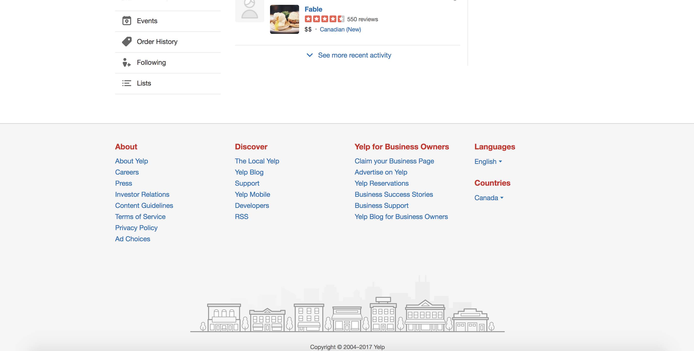
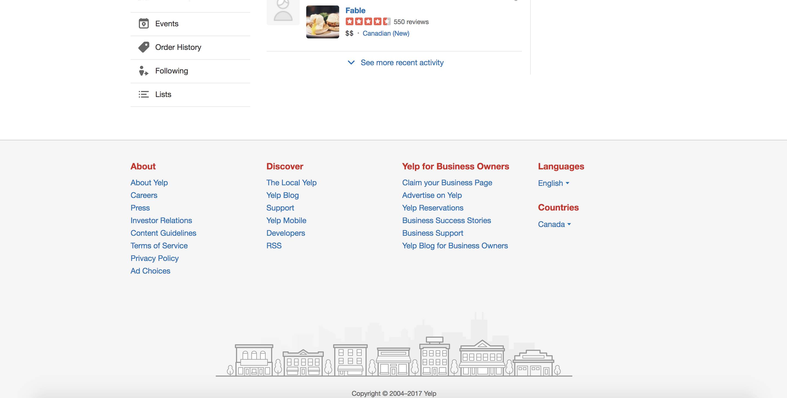

A Yelp Super Reviewer is a reviewer who is invested in fostering a positive and reliable review platform.
Maybe you are a food critic, someone in the restaurant worker or an avid foodie in your city,
but we think you would be a great fit for keeping the Yelp environment honest and trustworthy.
If approved, your reviews will appear at the top of the review section for restaurants as a verified,
trustworthy source of information for our users.
That said, users will be able to rate your trustworthiness on the platform,a feature that
only you will be able to see from the other side to ensure you receive feedback on your work.
We hope to create a community of detailed, reliable, trustworthy reviews on this platform,
and think you might be someone to promote that message.
These terms and conditions govern your access to and use of Yelp's websites and mobile applications that link to or reference these Terms. By accessing or using the Site, you are agreeing to these Terms and concluding a legally binding contract with Yelp Inc.